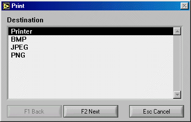
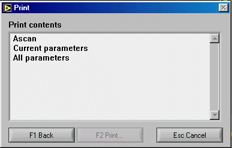
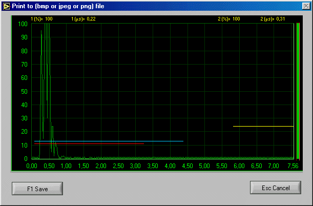
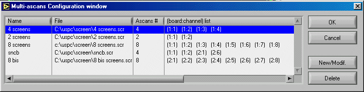
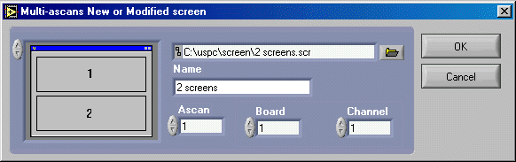
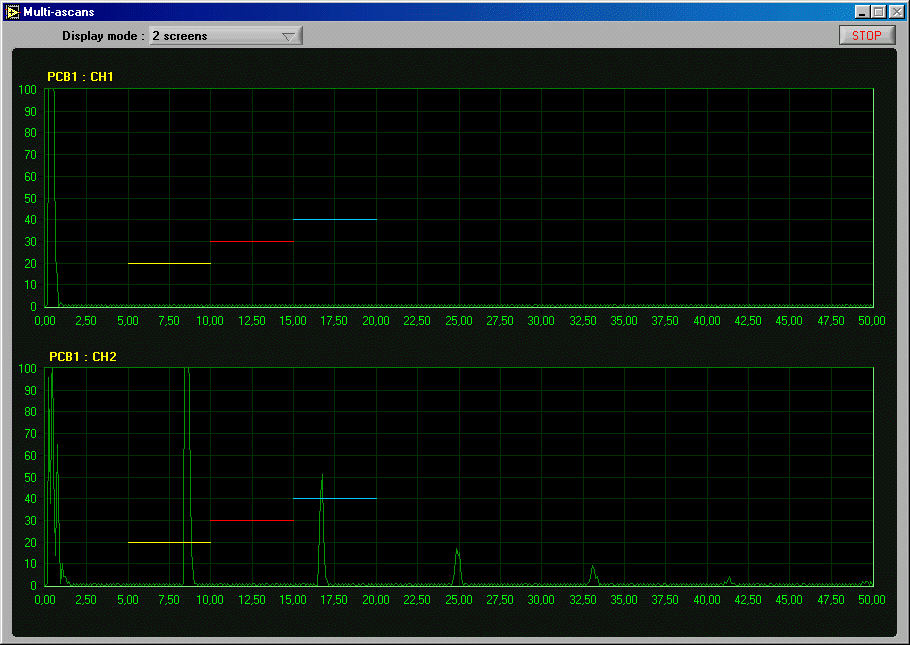
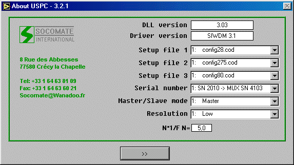

03 January
2002
File:
Open open a
UT-file.
Save save the
UT settings in the current file name.
Save as save the UT
settings under another file name.
Duplicate a channel duplicate a channel in a UT-file
Print print
A-scan and/or UT parameters on printer or into a file.
Recent
files open
one of the last 4 UT-files being used.
Exit exit
the application program.
Multi A-scans
display:
Display open multi
A-scans window
Configuration Create/Modify
Multi A-scan setting files (*.scr)
About USPC Show
USPC information
Call this
function when you want to print a A-scan and/or parameters.
If you
choose to record into a file, you can only save the current A-scan.
If you
chose to print out, you have the possibility to print A-scan and/or parameters
of current channel and/or all current parameters (all boards and channels).
File
formats supported are:
BMP
JPEG
PNG
Remark:
Before to print A-scan, we suggest to freeze it.

(Menu_picture1_us.gif)

(Menu_picture3_us.gif)

(Menu_picture4_us.gif)
When more than
one USPC card or MUX is used, you can display up to 8 A-scans on screen.
You can
define the source of each A-scan to be displayed. So, in the same window, you
may display A-scan of different boards.
To define
or modify a new screen:
Select
Configuration function into Multi A-scan display menu.
Click on
New/Modif. Button.
To create
a new screen : enter a new file name.
To modify
a screen : enter an existing screen file name or select a screen file into the
dialog box (click on directory icon to show “Open” dialog box).
Select the
number of A-scans to be displayed.
Enter a
name for this screen (we suggest to use the file name).
For each
A-scan: Enter card and channel number.
Click on
OK to create the screen file or Cancel.
Click on
OK to register the new screen file into the list.

(Menu_picture6_us.gif)

(Menu_picture7_us.gif)

(Menu_picture5_us.gif)
This
function shows a window with USPC information.

(Menu_picture2_us.gif)